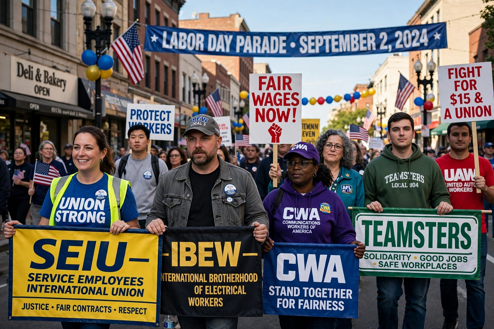

AFL–CIO

| Full name | American Federation of Labor and Congress of Industrial Organizations |
|---|---|
| Founded | 5 December 1955 |
| Headquarters | Washington, D.C., United States |
| Membership | Over 12 million workers through affiliated unions |
| Affiliations | ITUC |
The American Federation of Labor and Congress of Industrial Organizations (AFL–CIO) is a national trade union centre and the largest federation of unions in the United States. It is composed of more than 60 national and international labour unions representing over 12 million active and retired workers.
Origins
The federation united two rival labour movements. The American Federation of Labor, founded in 1886 by Samuel Gompers, organised workers by craft; the Congress of Industrial Organizations, founded in 1935 within the AFL and expelled in 1936, organised whole industries, including steel, autos and rubber. After two decades of rivalry and raiding, the two bodies merged in 1955 under George Meany of the AFL and Walter Reuther of the CIO.
Structure
The AFL–CIO is a federation, not a union itself: its affiliated unions retain autonomy over bargaining and internal affairs, while the federation co-ordinates political endorsements, legislative lobbying, organising strategy and state and local central labour councils. Its governing bodies are a quadrennial convention, a general board and an executive council. Liz Shuler became president in 2021 following the death of Richard Trumka.
Influence
The federation helped secure the passage of reforms including the Civil Rights Act, Medicare and the Occupational Safety and Health Act, and remains a major force in Democratic Party politics, though union density in the United States has fallen from over 30% in the 1950s to around 10%, with about 6% in the private sector.
See also: AFL-CIO · Samuel Gompers